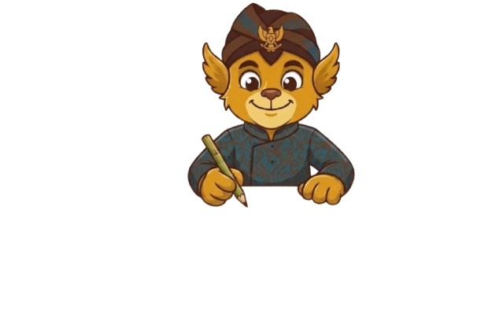

Seberapa kenal kamu dengan Nusantara?
Sepuluh pertanyaan singkat. Bukan untuk menghakimi—untuk memantik rasa ingin tahu.

Siap menjadi Penjaga Pusaka?
Jawab sepuluh soal pilihan ganda. Setiap jawaban langsung disertai penjelasan, dan waktu dicatat sebagai informasi—bukan tekanan. Bank 30 soal ini adalah materi demo edukatif; fakta dan sumbernya perlu ditinjau sebelum publikasi.
+10 untuk jawaban benarSkor maksimal 100Tanpa batas waktu
Wawasanmu bertambah.
0
Riwayat: . Skor ini hanya tersimpan di browser.